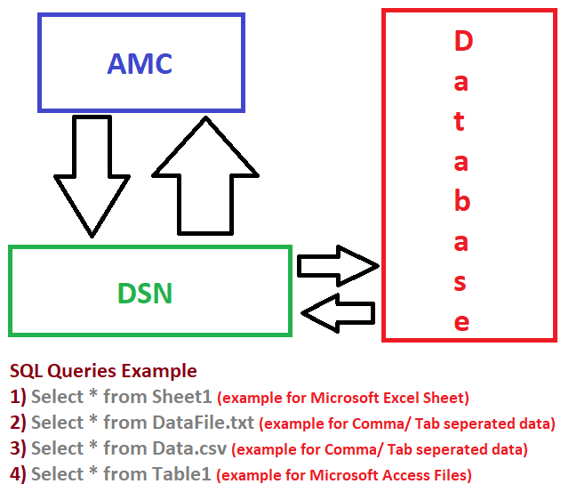

Type from Excel
You can Alternatively use Type from Excel Action and Type Data onto Active Application Window. Watch Type from Excel Video Tutorial which displays how to read from Excel File and Type onto Active Application Window.
What is a Database ?
A Database stores information / data in an organised manner. A Database Holds Records of Related Data in terms of Rows and Columns.
Example of Database ?
An Excel or Microsoft Access File is a Good Example of Database which holds information in Rows and Columns. Yes there are many other Databases like CSV Files, SQL Server, Text Files, Oracle Database, etc.
What do i need to know to use Database Typer ?
You need to know 2 Database related things as mentioned below to use Database Typer. Yes you do also need to know how to add Action(s) to the Auto Mouse Click Script and Execute them.
- DSN : DSN is a Link to a Database and is identified by a Name.
- SQL Query : SQL Query allows you to Identify what Data you need to extract from the Database.
How to use Database Typer ?
There are few steps required to use the Database Typer. The given below steps outline how to use Database Typer.
- Prepare a Database of any suitable Type and Store information in it in the format of Rows and Columns.
- Click on the ODBC button and Create a DSN and Configure / Connect it to your Database.
- Specify SQL Query to Read Data from the Selected Database.
- Use the Test button to ensure that you can connect to your Database and Extract Information.
- Your Database Type Script Action is ready to be used in the Auto Mouse Click Software. When Executed, each Execution of the Action will type Text of Next Field value onto Activate Application Window.

What Databases can be Read with Database Typer?
The Database Typer uses ODB Connection to communicate with the Database. Depending on Database you have and availability of ODB Drivers, you can read any or more of given below Databases.
- Microsoft Excel Files with Sheets considered as Tables and Sheet Data containing Rows and Columns.
- Microsoft Access displays Data in Tables containing Records which can be read by this Database Typer.
- Tab, Comma or any other character delimited CSV or Text Files read with the help of Microsoft Text Driver.
- SQL Server, Oracle, and other Databases for which suitable ODBC Driver is available and installed on your Computer.
In what Order, the Data is read by Database Typer from Database ?
When you add a Database Typer Action to a Script and Execute it, the Next Field value identified by SQL Query is read by Database Typer and typed onto Active Application Window. When you execute a Database Typer Action in a Script 2 times, the Row 1 Column 1 value will be read and then Row 1 Column 2 value will be read by Database Typer. Given below are few more examples on using Database Typer to Auto Type Text onto Active Application Window.
- Executing Database Typer Action 1 time will Fetch Row 1 Column 1 value from Database and will type the value onto Active Application Sindow.
- Executing Database Typer Action 2 times will Fetch Row 1 Column 1 value and will type onto Active Application Window and then the Second Execution will Fetch Row 1 Column 2 value and will type onto Active Application Window.
- Order for Fetching Data from Database Table of 4 Columns when the Action is executed Multiple Times will be Row 1 Column 1, Row 1 Column 2, Row 1 Column 3, Row 1 Column 4 and then Row 2 Column 1, Row 2 Column 2, Row 2 Column 3, Row 2 Column 4 and then Row 2 Column 1, and so on.
- Adding Database Typer Action at 2 different locations in the Script with same DSN Name and SQL Query can be done and Second Action of Database Typer will fetch Next Field value and will not start fetching data from beginning.